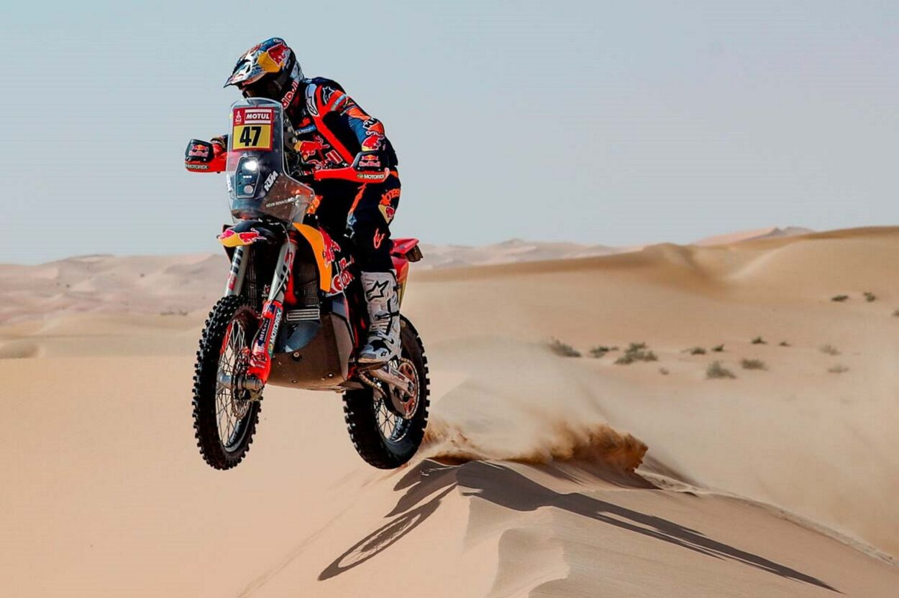

1°
Arenacross
Uma das características mais marcantes do Arenacross é a sua pista. Ela é projetada para desafiar a habilidade dos pilotos, com curvas apertadas, saltos altos, seções de whoops e outros obstáculos. A pista é relativamente curta, o que significa que os pilotos precisam estar constantemente mudando de direção e tomando decisões rápidas. A combinação de obstáculos e mudanças frequentes de direção torna o Arenacross um esporte altamente físico e mentalmente desafiador.
2°
Enduro
O enduro é uma modalidade de esporte off-road que combina habilidades de pilotagem, resistência física e estratégia. É uma competição emocionante que testa a capacidade dos pilotos de enfrentar terrenos variados e desafiadores, como trilhas, montanhas, florestas e até mesmo áreas urbanas.
No enduro, existem diferentes modalidades, cada uma com suas próprias características e desafios. Alguns exemplos incluem: Enduro de Regularidade, Enduro de Velocidade, Enduro de Cross Country, Enduro de Trial,
3°
Velocross
O velocross, também conhecido como Veloterra, é um esporte radical praticado com motos em circuitos de terra batida, muitas vezes com muita lama. Ganha destaque pela sua alta adrenalina e intensidade.
4°
Rally
Um rally de moto é uma competição de resistência para motocicletas que geralmente envolve a navegação de um percurso em um ambiente off-road, como desertos, trilhas ou florestas. Os participantes usam um "roadbook" (um livro de instruções com pontos de controle e informações de navegação) para encontrar o caminho correto e completar o percurso o mais rápido possível ou com a maior regularidade de velocidade.
5°
Trial
Trial de motocross é uma modalidade do motociclismo off-road que enfatiza habilidade técnica, controle e equilíbrio em vez de velocidade. O objetivo é superar obstáculos naturais ou artificiais sem tocar o chão com os pés e com o mínimo de erros.